Advanced Building Revue 09: Self Regulating Stations
It has been quite a while since Mark introduced the SRNW and since then, we have tried quite a few self regulating stations and networks. The main point of this article is in showing the station designs that we already used in the past, and uncover the reasons why such a construction as a transfer station is so key for progress with self-regulation. And in the end of the article, we will also look how such a station is built.

Synchronized stations
The older style of stations could be called synchronized. This is because they work like in a cycle where all trains wait to load until released. Then repeat again. With smaller stations it doesn’t make anything bad, but when we need higher throughput, there is no other way than to increase platform count. And because the trains are all released at one time, the more platforms, the larger wave of trains.
The reason why trains need to be synchronized is because we need to separate the times when dummy trains are loading, and when real trains are loading, otherwise they would steal the cargo from each other.
Synchronized stations have multiple styles of how can they be built.
1. NOT gated
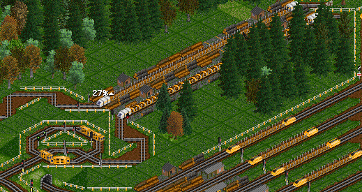
The probably fastest and fairly universal way how to build this station. All of these stations have some dummy train(s) that 1. load, 2. move a bit and trigger the NOT, 3. move back the little bit and unload 4. turn around and go loading again. The fact that the trains move just a very short distance, which usually is only a short period of time results in very short time when no train is loading in the station (which makes it probably the most powerful synchronized station).

2. 3-bayed
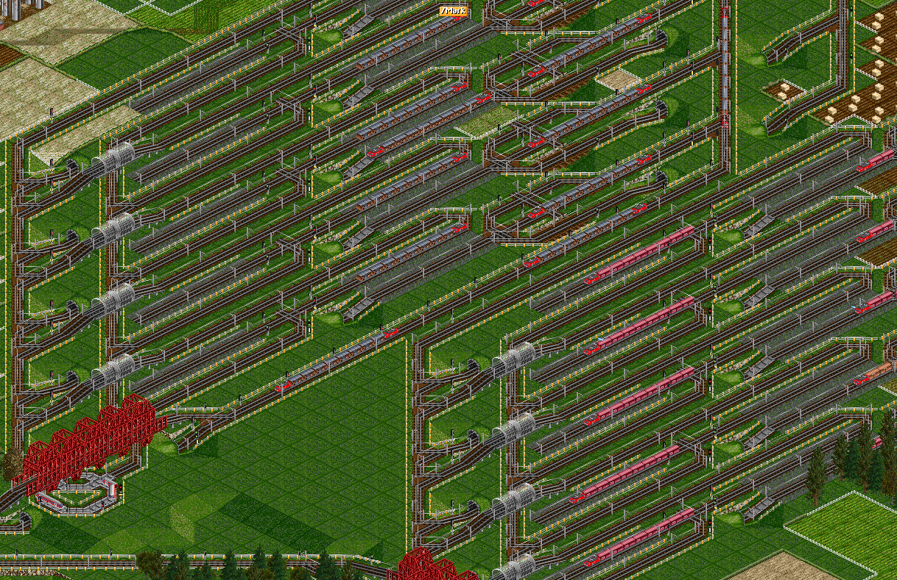
Dummy trains in here are moving in three bays: 1. loading area, 2. waiting area, 3. drop area. First, they load in 1. Then, they wait for the rest of the dummies to load and when all of them leave their loading areas, they gather in waiting bays and finally go to drop the cargo. Since all of those bays/platforms need to be at least 1TL long (the waiting area can be shortened by adding a NOT gate, like image shows), it is a lot slower than the NOT gated design. It does not mean it should not be used, only expect a bit lower ratings because of the dummy travel time.

Asynchronous stations
The newer way how to make a self regulating station is based on eliminating the wave-generating flaw of synchronized stations. This can be done few different ways.
Multiple station layout
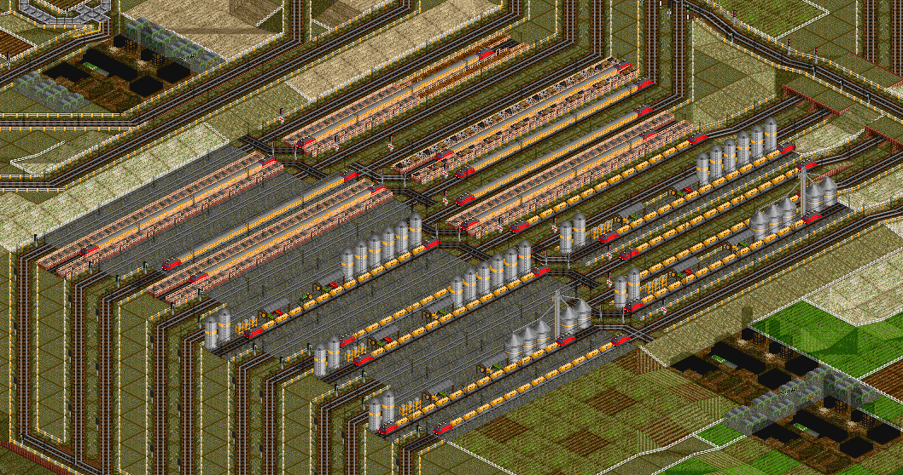
The first idea from Nickman (article here) was that each platform should have it’s own station. Therefore we get a lot of stations where we are facing one problem – once we reach a certain amount of stations, the industry will not fill all of them but only a few. This is actually a good idea and could be mixed with the synchronized station! We could do everything like we normally do, but just make 2 or 3 stations instead of 1, they can be larger, but we still get a half/third of the waves we did before, which is at least some advance.

Transfer stations
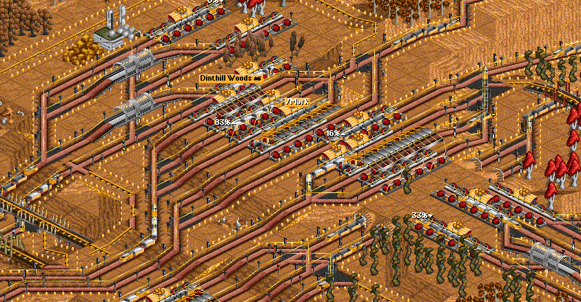
Another possibility is to create a transfer station (former article here) which is fed by trains coming from the primaries. Then we need some mechanism that releases the real trains when a dummy arrives. When I tested the original design that Mark created (for example in psg170), it was still overflowing with wood. Another station of this kind could be seen in psg199 which was probably so many times modified by avdg that it resulted in releasing empty trains that somehow didn’t manage to load. I decided to make an attempt in psg200, detailed description follows below in the article.

Sbahn style
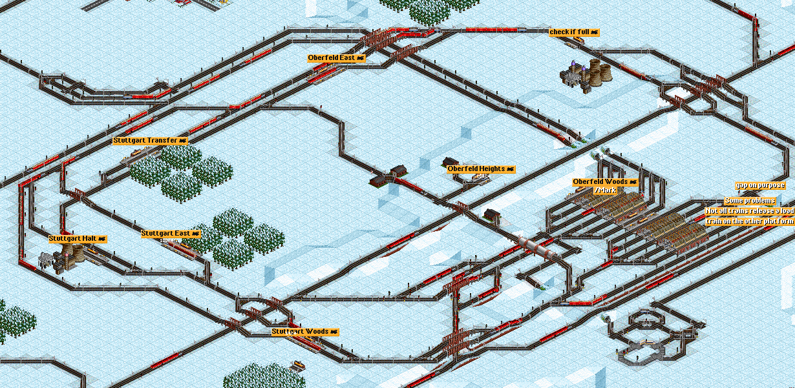
Yet another idea is to make a loop of stations and just dump there some trains. This has to be enhanced by some self regulating orders so that trains that aren’t full return back to the loop and try again. This design is usable, but needs some real tweaking and toying with to make it operational. Example of this is psg170 feeder for Mark’s transfer station or the thing Mazur wrote an article about.

The Transfer Station
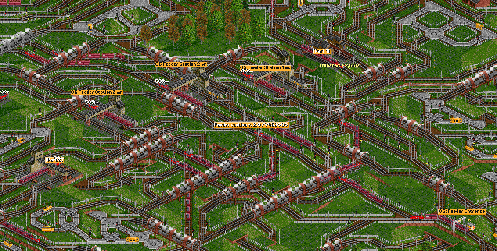
When I started thinking about this station, I started pretty much from nothing. I told myself “I don’t care how others did it, I will just do it however I hope it could work.” so I started basically from nothing. Let’s put down some notes how could have my thought process looked.

There is a savegame to be downloaded. I strongly recommend obtaining it since it contains some additional info.
General idea and conditions
I was thinking about setting some conditions for trains. Making them proceed from one condition to another, and only when all of them would be fulfilled, then something would happen. For that, normal NOT gate would not work, simply because I would get something like “is there at least condition fulfilled?” instead of “are there ALL conditions fulfilled?”.
Gates
I am going to briefly describe which gates I used here. There are two, both of which convert red or green signal to an absolute red. As an absolute red I understand that there is a train in the block, not just a red combo signal. Just like in priorities – there also gets a train into the block. This is required to chain the conditions and require all of them to be fulfilled to do *something*. Note: both of the gates are interchangeable just if you use a not gate to reverse the input.
Red -> Absolute Red 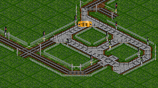
This is a gate that was developed by Vitus, used in PZG13. Detailed description in the savegame.

Green -> Absolute Red 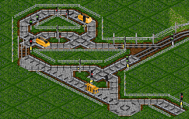
This is a gate that is new by me, used in PSG200. Detailed description in the savegame.

Transfer Logics
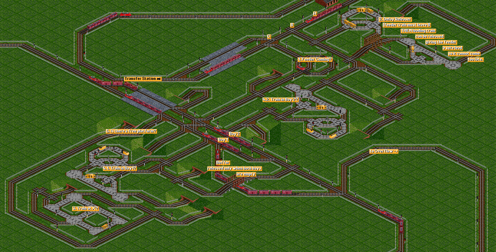
The main point of how should the station work in general was that there should be some process where the cargo is transfered from a train to another. This process is to be started by the feeder train arriving to drop…

1. Feeder coming?
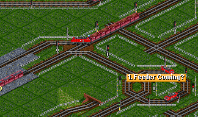
This is the first and main condition that the transfer station needs to have – when the feeder train comes to unload, a loading train can be released. (also the only conditon in the original psg170 styled feeder)

Under whatever circumstances, the feeder train could release the loading train, and then come actually too late so that loading starts before unloading. This makes the loading train leave the station and the cargo is left there in the station. To make sure this never happens, we should make there some delay.
2. Delayer
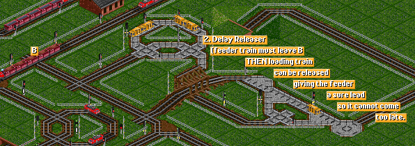
To make as precise delay as possible, we can make the loading train not being released until the feeder is close enough to the drop. This can be done by defining where could it’s tail be.

After we are totally sure our feeder will never come late, we still face some possible flaws. These occur when the feeder comes to the station, it even delays, but the loading train can’t load, for some reason. The reasons could be:
3. Train at X?
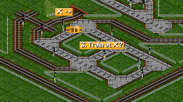
If there would be a train directly blocking the release, it would just shut down any loading but the feeder would still unload. Therefore we need to make sure that our loading train can go into the station.

4. Is there anyone to load?
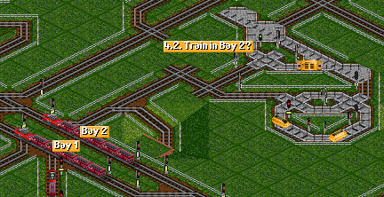
There could also easily happen a case where we have no trains waiting to load. In that case we can’t let our feeder drop the cargo, so we need to make sure there is at least one train waiting.

5. Is there a free platform?
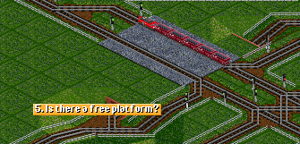
It is also possible that the loading trains filled all platforms. Therefore if another loading train is released, it not only fails to find it’s platform, but gets also stuck in the X. Theoretically, this situation can’t ever happen if we provide enough throughput to the loading station. In fact, it is possible that there is a jam at the station exit or somewhere in front of it. At such case of jam, it would just again break our loading, so we need to make sure the train has some place where to go.

Additional buffer
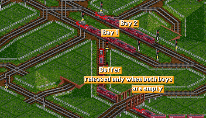
Since under normal circumstances it could easily happen that there would be no loading trains available at the moment due to wave on ML or whatever, I think it is nice to buffer at least 1 train aside for the two bays I have here, and make it release only then there is a total lack of trains (both bays empty). That would make the backup train last in the buffer bay for quite a long time if everything worked well.

Additional Possibilities
Feeder Trains
I decided to make normal full load orders for my feeder trains to make them as simple as possible. Although as you could have seen, Mark used another kind of a Sbahn-ish self regulation as feeders, which keeps all of the stuff self-regulated so that’s kinda nice. 🙂
Station Layout
I am not sure how about some different ways of making the transfer station look. I tried this, and brought it to work… Due to all the conditions, the station performs quite slowly, so it would be very good to make multiple stations/multiple station parts to make sure throughput is sufficient.
Space requirements
When built, this station looks like one huge mess of rails. That is because there are quite many logic gates and logic wires. It sure looks like the footprint is massive. It kind of is, but keep in mind that spaces of land that would normally not be used, could be populated with logic 🙂 (That is how logic should be constructed overall in my opinion anyway).
Conclusion
Constructing stations in self-regulating games is basically 99% work there. Constructing them and using different ways how to do so earned quite a lot of our attention already and I think there still is a lot to cover. For example testing the sbahn srnw and transfer stations has not been done much yet. The main meanings of this article in general should firstly be suggesting to stop doing stations the old way without thinking and rather try to split them. Secondly, we should try to experiment more with some transfer station layouts, since they really make no waves. And last but not least, let’s not focus on just one design and forget the other, because if we have all stations the same, we become just monkeys. Now, thank you for reading and let’s have some fun.
Categories: Community News, Gameplay, Public Server